Simulationen dienen grundsätzlich dazu, zu bewerten, ob ein bekanntes Angebot ausreicht, um eine bekannte Nachfrage zu bedienen. "Angebot" ist dabei üblicherweise eine Fläche, ein Querschnitt oder eine Zeit, wohingegen "Nachfrage" Personen sind, z.B. Besucher, Fußgänger, Radfahrer, Autofahrer.
Aber ist das nicht trivial? Nehmen wir als einfaches Beispiel eines Angebots eine Kontrollstelle. Wenn eine Kontrolle 60 Sekunden benötigt, dann können in einer Stunde 60 Personen kontrolliert werden. Ist die Nachfrage höher, dann wächst die Warteschlange. Wenn die Nachfrage viel höher ist, dann würde man mehrere Kontrollstellen parallel anbieten. 10 Kontrollstellen ermöglichen die Passage von 600 Personen pro Stunde. So weit, so einfach.
Solche einfachen Berechnungen sind in vielen Fällen sicherlich ausreichend. Realistisch und präzise sind sie allerdings nicht:
Hinter diesen konkreten Beispielen stehen allgemeine Vorzüge der Simulation gegenüber überschlägigen Handrechnungen – sie machen die Simulation zum hilfreichen Werkzeug für Planer:
Kehren wir zum konkreten Beispiel der Warteschlangen an einer Kontrollstelle zurück und beginnen mit der einfachsten Konfiguration, bei der die Servicedauer für alle Personen identisch ist und 60 Sekunden beträgt. 100 Simulationsläufe, bei denen u. a. die Startzeitpunkte der simulierten Personen und deren Wunschgeschwindigkeiten variiert werden, ergeben in der Mehrzahl der Fälle eine Kapazität von 59, in einer Minderzahl von 58 Personen pro Stunde.
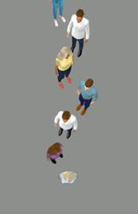
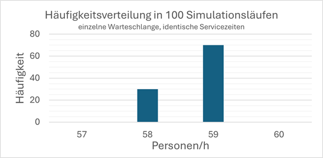
Dieses Ergebnis ist erwartbar und ließe sich auch überschlägig aus der Servicedauer und der zusätzlichen Wechselzeit zwischen zwei Besuchern von rund einer Sekunde berechnen. Schon mit dem nächsten Schritt wird die analytische Berechnung der Häufigkeitsverteilung schwieriger. Schwierig genug, dass es deutlich einfacher ist ein Simulationsmodell zu erstellen und die Simulationen auszuführen: Nimmt man an, dass die Servicezeit nur im Mittel 60 Sekunden beträgt, die einzelnen Vorgänge aber gleichmäßig zwischen 45 und 75 Sekunden verteilt dauern, ergibt sich die folgende Verteilung für die Kapazitäten.
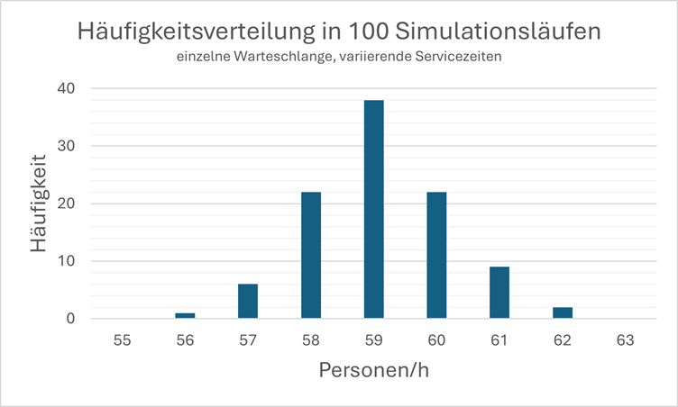
Ob dieser Unterschied relevant ist, ist eine Frage der Risikobewertung: Mit einer Wahrscheinlichkeit von rund 1 % – also an einer von 100 Kontrollstellen oder an einem von 100 Tagen – passieren nur 56 Personen pro Stunde die Kontrollstelle.
Nehmen wir nun an, dass ein Zustrom von rund 600 Personen pro Stunde erwartet wird. Wir planen deshalb mit 10 parallelen Kontrollstellen.
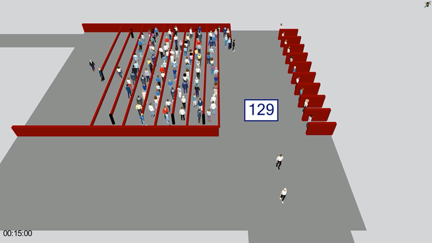
Sobald eine Kontrollstelle frei wird, begibt sich die nächste Person aus der zentralen Warteschlange dorthin. Durch den längeren Zugangsweg entsteht ein größerer Zeitverlust, den die Simulation quantifiziert
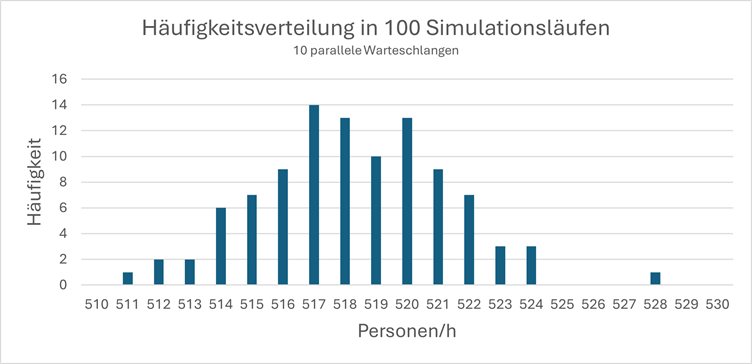
Obwohl die Kapazität des Systems nun deutlich unter den vereinfacht erwarteten 600 Personen pro Stunde liegt, wird sie unter Umständen immer noch überschätzt. Ein hilfreicher und häufig übersehener Nutzen von Simulationen ist, dass sich beim Betrachten der resultierenden Animation das Gefühl einstellt, unrealistisches Verhalten zu beobachten, weil dieser oder jener Verhaltensaspekt bislang nicht berücksichtigt wird. In diesem Fall wäre dies, dass die erste Person in der zentralen Warteschlange sofort startet, wenn eine Kontrollstelle frei wird, während realistischerweise einige Zeit vergeht, selbst wenn hohe Aufmerksamkeit unterstellt wird.
Fügt man dieses Zögern hinzu (konkret hier: 50 % zögern nicht, einige wenige bis zu 10 Sekunden), fällt die erwartete Kapazität weiter und die Simulationsergebnisse erstrecken sich über einen noch größeren Bereich.
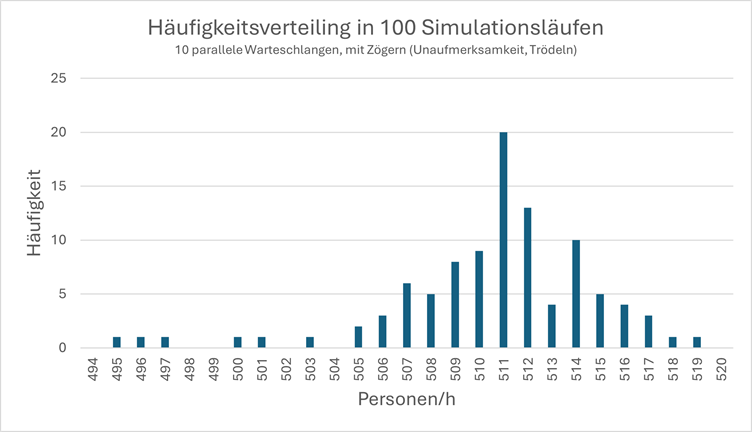
Selbstverständlich beschränkt sich die Arbeit mit Simulationsmodellen nicht auf die Reproduktion von Verhaltensaspekten und deren Konsequenzen. Mindestens ebenso bedeutsam ist die quantitative Bewertung der Auswirkungen möglicher Maßnahmen. Eine naheliegende Maßnahme in diesem Beispielfall ist, an den Kontrollstellen mindestens eine weitere Person warten zu lassen. Dies erweist sich – erwartungsgemäß – als nützliche Maßnahme, denn die Kapazität steigt im Vergleich zur vorigen Konfiguration von durchschnittlich 511 auf 580 Personen pro Stunde.
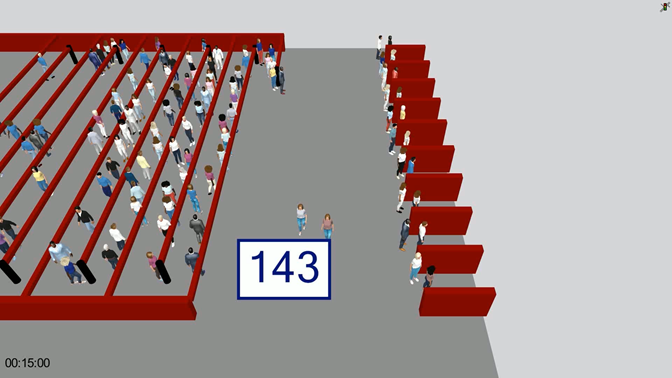
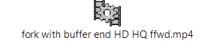
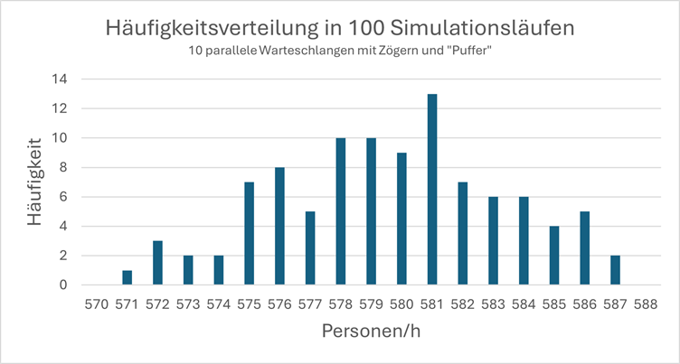
Dagegen bringt es keine nennenswerte Verbesserung mehr, den Auslass der Warteschlange mittig vor den Kontrollstellen zu platzieren.
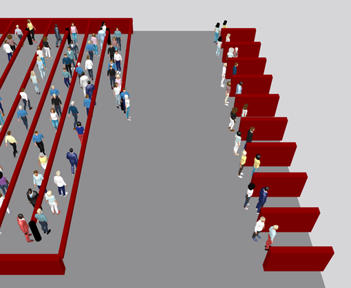
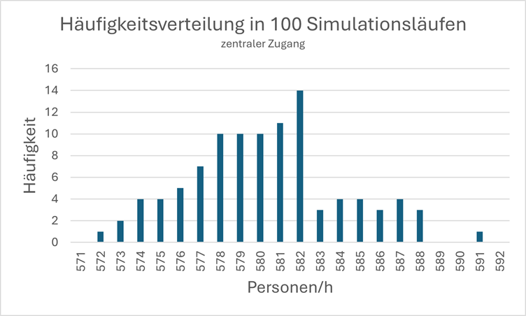